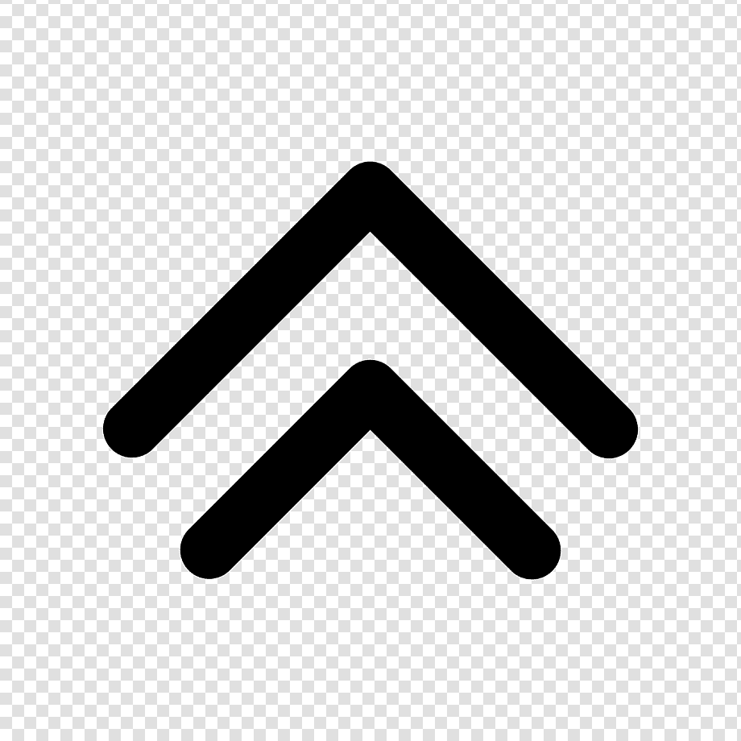

PathFinding Visualizer
Home
(current)
Start Node:
End Node:
Barrier Node:
Path Node:
Reset
Algorithms
Astar Algorithm
Dijkstra Algorithm
depth first search
Instructions
Pathfinder
Instructions:
Click on grid to select starting position
Click on grid to select ending position
You can now add walls for algorithm to avoid
Click on algorithms and select PathFinding algorithm
Click Reset button to reset grid and try again
close
